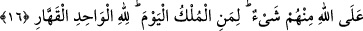

SİZİN İÇİN
GÖKTEN RIZIK İNDİREN
O’DUR
10. İnkâr edenlere şöyle seslenilir: Allah’ın gazabı, sizin kendinize olan
kızgınlıktan elbette daha ağırdır. Zira siz imana davet ediliyor, fakat inkâr
ediyordunuz.
11. Onlar: Rabbimiz, bizi iki defa öldürdün, iki defa dirilttin. Biz de günahlarımızı
itiraf ettik. Bir daha (bu ateşten) çıkmaya yol var mıdır? derler.
12. (Onlara denir ki:) İşte bunun sebebi şudur: Tek Allah’a ibadete çağrıldığı
zaman inkâr edersiniz. O’na ortak koşulunca (bunu) tasdik edersiniz. Artık
hüküm, yücelerin yücesi Allah’ındır.
13. Size âyetlerini gösteren, sizin için gökten rızık indiren O’dur. Allah’a
yönelenden başkası ibret almaz.
14. Haydi, kâfirlerin hoşuna gitmese de Allah’a, Allah için dindar ve ihlâslı olarak
duâ edin!
15. Dereceleri yükselten, Arş’ın sahibi Allah, kavuşma günüyle korkutmak için
kullarından dilediğine iradesiyle ilgili vahyi indirir.
16. O gün onlar (kabirlerinden) meydana çıkarlar. Onların hiçbir şeyi Allah’a
gizli kalmaz. Bugün hükümranlık kimindir? Kahhâr olan tek Allah’ındır.
“İnkâr edenlere ise şöyle nidâ edilir:” Nidâ ve münâdât, çağırmak ve sesi